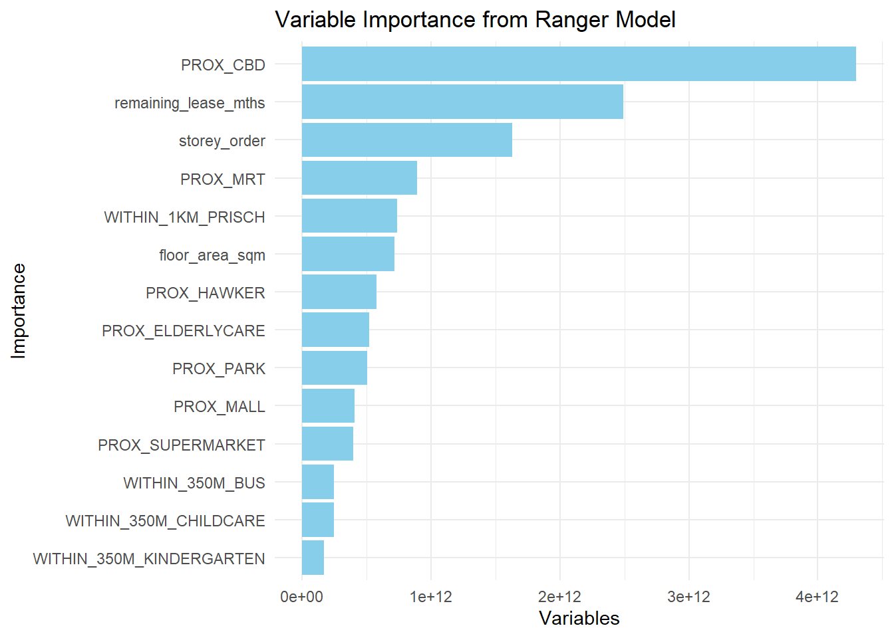

pacman::p_load(sf, spdep, GWmodel, SpatialML, tmap, rsample, yardstick, tidyverse, knitr, kableExtra, spatialRF)In-Class Exercise 12
mdata <- read_rds("data/mdata.rds")set.seed(1234)
HDB_sample <- mdata %>% sample_n(1500)overlapping_points <- HDB_sample %>%
mutate(overlap= lengths(st_equals(., .)) > 1)
summary(overlapping_points$overlap) Mode FALSE TRUE
logical 1047 453 HDB_sample <- HDB_sample %>% st_jitter(amount = 5)resale_split <- initial_split(HDB_sample, prop = 6.67/10,)
train_data <- training(resale_split)
test_data <- testing(resale_split)
write_rds(train_data, "data/train_data.rds")
write_rds(test_data, "data/test_data.rds")library(ggstatsplot)Warning: package 'ggstatsplot' was built under R version 4.4.2You can cite this package as:
Patil, I. (2021). Visualizations with statistical details: The 'ggstatsplot' approach.
Journal of Open Source Software, 6(61), 3167, doi:10.21105/joss.03167mdata_nogeo <- mdata %>% st_drop_geometry()
ggstatsplot::ggcorrmat(mdata_nogeo[, 2:17])
price_mlr <- lm(resale_price ~ floor_area_sqm +
storey_order + remaining_lease_mths +
PROX_CBD + PROX_ELDERLYCARE + PROX_HAWKER +
PROX_MRT + PROX_PARK + PROX_MALL +
PROX_SUPERMARKET + WITHIN_350M_KINDERGARTEN +
WITHIN_350M_CHILDCARE + WITHIN_350M_BUS +
WITHIN_1KM_PRISCH,
data=train_data)
summary(price_mlr)
Call:
lm(formula = resale_price ~ floor_area_sqm + storey_order + remaining_lease_mths +
PROX_CBD + PROX_ELDERLYCARE + PROX_HAWKER + PROX_MRT + PROX_PARK +
PROX_MALL + PROX_SUPERMARKET + WITHIN_350M_KINDERGARTEN +
WITHIN_350M_CHILDCARE + WITHIN_350M_BUS + WITHIN_1KM_PRISCH,
data = train_data)
Residuals:
Min 1Q Median 3Q Max
-176088 -38259 -311 33400 218441
Coefficients:
Estimate Std. Error t value Pr(>|t|)
(Intercept) 71827.94 34259.62 2.097 0.036286 *
floor_area_sqm 2810.31 289.07 9.722 < 2e-16 ***
storey_order 14251.20 1070.16 13.317 < 2e-16 ***
remaining_lease_mths 362.08 14.73 24.579 < 2e-16 ***
PROX_CBD -16017.44 631.87 -25.349 < 2e-16 ***
PROX_ELDERLYCARE -10865.98 3175.55 -3.422 0.000648 ***
PROX_HAWKER -20941.91 4088.97 -5.122 3.64e-07 ***
PROX_MRT -39237.45 5474.82 -7.167 1.50e-12 ***
PROX_PARK -14275.17 4569.31 -3.124 0.001835 **
PROX_MALL -13442.29 6637.71 -2.025 0.043122 *
PROX_SUPERMARKET -7028.14 13003.93 -0.540 0.589000
WITHIN_350M_KINDERGARTEN 10744.68 2059.14 5.218 2.20e-07 ***
WITHIN_350M_CHILDCARE -1836.86 1206.44 -1.523 0.128193
WITHIN_350M_BUS 918.07 726.83 1.263 0.206846
WITHIN_1KM_PRISCH -10278.97 1570.99 -6.543 9.68e-11 ***
---
Signif. codes: 0 '***' 0.001 '**' 0.01 '*' 0.05 '.' 0.1 ' ' 1
Residual standard error: 61180 on 985 degrees of freedom
Multiple R-squared: 0.7387, Adjusted R-squared: 0.7349
F-statistic: 198.9 on 14 and 985 DF, p-value: < 2.2e-16gwr_bw_train_ad <- bw.gwr(resale_price ~ floor_area_sqm +
storey_order + remaining_lease_mths +
PROX_CBD + PROX_ELDERLYCARE + PROX_HAWKER +
PROX_MRT + PROX_PARK + PROX_MALL +
PROX_SUPERMARKET + WITHIN_350M_KINDERGARTEN +
WITHIN_350M_CHILDCARE + WITHIN_350M_BUS +
WITHIN_1KM_PRISCH,
data=train_data,
approach="CV",
kernel="gaussian",
adaptive=TRUE,
longlat=FALSE)Adaptive bandwidth: 625 CV score: 3.456917e+12
Adaptive bandwidth: 394 CV score: 3.230272e+12
Adaptive bandwidth: 250 CV score: 2.879913e+12
Adaptive bandwidth: 162 CV score: 2.572617e+12
Adaptive bandwidth: 107 CV score: 2.216176e+12
Adaptive bandwidth: 73 CV score: 1.921762e+12
Adaptive bandwidth: 52 CV score: 1.735282e+12
Adaptive bandwidth: 39 CV score: 1.618876e+12
Adaptive bandwidth: 31 CV score: 1.527241e+12
Adaptive bandwidth: 26 CV score: 1.487803e+12
Adaptive bandwidth: 23 CV score: 1.467045e+12
Adaptive bandwidth: 21 CV score: 1.470683e+12
Adaptive bandwidth: 24 CV score: 1.469281e+12
Adaptive bandwidth: 22 CV score: 1.469197e+12
Adaptive bandwidth: 23 CV score: 1.467045e+12 gwr_ad <- gwr.basic(formula = resale_price ~
floor_area_sqm + storey_order +
remaining_lease_mths + PROX_CBD +
PROX_ELDERLYCARE + PROX_HAWKER +
PROX_MRT + PROX_PARK + PROX_MALL +
PROX_SUPERMARKET + WITHIN_350M_KINDERGARTEN +
WITHIN_350M_CHILDCARE + WITHIN_350M_BUS +
WITHIN_1KM_PRISCH,
data=train_data,
bw=20,
kernel = 'gaussian',
adaptive=TRUE,
longlat = FALSE)gwr_pred <- gwr.predict(formula = resale_price ~
floor_area_sqm + storey_order +
remaining_lease_mths + PROX_CBD +
PROX_ELDERLYCARE + PROX_HAWKER +
PROX_MRT + PROX_PARK + PROX_MALL +
PROX_SUPERMARKET + WITHIN_350M_KINDERGARTEN +
WITHIN_350M_CHILDCARE + WITHIN_350M_BUS +
WITHIN_1KM_PRISCH,
data=train_data,
predictdata = test_data,
bw=40,
kernel = 'gaussian',
adaptive=TRUE,
longlat = FALSE)gwr_pred_df <- as.data.frame(gwr_pred$SDF$prediction) %>%
rename(gwr_pred= "gwr_pred$SDF$prediction")coords <- st_coordinates(HDB_sample)
coords_train <- st_coordinates(train_data)
coords_test <- st_coordinates(test_data)train_data_nogeom <- train_data %>% st_drop_geometry()set.seed(1234)
rf <- ranger(resale_price ~ floor_area_sqm + storey_order +
remaining_lease_mths + PROX_CBD + PROX_ELDERLYCARE +
PROX_HAWKER + PROX_MRT + PROX_PARK + PROX_MALL +
PROX_SUPERMARKET + WITHIN_350M_KINDERGARTEN +
WITHIN_350M_CHILDCARE + WITHIN_350M_BUS +
WITHIN_1KM_PRISCH,
data=train_data_nogeom)
rfRanger result
Call:
ranger(resale_price ~ floor_area_sqm + storey_order + remaining_lease_mths + PROX_CBD + PROX_ELDERLYCARE + PROX_HAWKER + PROX_MRT + PROX_PARK + PROX_MALL + PROX_SUPERMARKET + WITHIN_350M_KINDERGARTEN + WITHIN_350M_CHILDCARE + WITHIN_350M_BUS + WITHIN_1KM_PRISCH, data = train_data_nogeom)
Type: Regression
Number of trees: 500
Sample size: 1000
Number of independent variables: 14
Mtry: 3
Target node size: 5
Variable importance mode: none
Splitrule: variance
OOB prediction error (MSE): 2380608288
R squared (OOB): 0.8314446 test_data_nogeom <- cbind(test_data, coords_test) %>%
st_drop_geometry()rf_pred <- predict(rf, data = test_data_nogeom)rf_pred_df <- as.data.frame(rf_pred$predictions) %>%
rename(rf_pred = "rf_pred$predictions")set.seed(1234)
grf_ad <- grf(formula = resale_price ~ floor_area_sqm + storey_order +
remaining_lease_mths + PROX_CBD + PROX_ELDERLYCARE +
PROX_HAWKER + PROX_MRT + PROX_PARK + PROX_MALL +
PROX_SUPERMARKET + WITHIN_350M_KINDERGARTEN +
WITHIN_350M_CHILDCARE + WITHIN_350M_BUS +
WITHIN_1KM_PRISCH,
dframe=train_data_nogeom,
bw=20,
kernel="adaptive",
coords=coords_train)
Number of Observations: 1000Number of Independent Variables: 14Kernel: Adaptive
Neightbours: 20
--------------- Global ML Model Summary ---------------Ranger result
Call:
ranger(resale_price ~ floor_area_sqm + storey_order + remaining_lease_mths + PROX_CBD + PROX_ELDERLYCARE + PROX_HAWKER + PROX_MRT + PROX_PARK + PROX_MALL + PROX_SUPERMARKET + WITHIN_350M_KINDERGARTEN + WITHIN_350M_CHILDCARE + WITHIN_350M_BUS + WITHIN_1KM_PRISCH, data = train_data_nogeom, num.trees = 500, mtry = 4, importance = "impurity", num.threads = NULL)
Type: Regression
Number of trees: 500
Sample size: 1000
Number of independent variables: 14
Mtry: 4
Target node size: 5
Variable importance mode: impurity
Splitrule: variance
OOB prediction error (MSE): 2136776587
R squared (OOB): 0.8487088
Importance: floor_area_sqm storey_order remaining_lease_mths
7.159477e+11 1.628432e+12 2.490644e+12
PROX_CBD PROX_ELDERLYCARE PROX_HAWKER
4.298247e+12 5.218395e+11 5.760795e+11
PROX_MRT PROX_PARK PROX_MALL
8.914829e+11 5.049980e+11 4.065781e+11
PROX_SUPERMARKET WITHIN_350M_KINDERGARTEN WITHIN_350M_CHILDCARE
3.972638e+11 1.698057e+11 2.444726e+11
WITHIN_350M_BUS WITHIN_1KM_PRISCH
2.468555e+11 7.374575e+11
Mean Square Error (Not OOB): 407330280.502R-squared (Not OOB) %: 97.113AIC (Not OOB): 19855.135AICc (Not OOB): 19855.623
--------------- Local Model Summary ---------------
Residuals OOB: Min. 1st Qu. Median Mean 3rd Qu. Max.
-288000.0 -23927.3 -1310.4 -537.9 19889.8 359041.7
Residuals Predicted (Not OOB): Min. 1st Qu. Median Mean 3rd Qu. Max.
-50247.21 -2997.94 -98.15 74.63 2769.63 59034.15
Local Variable Importance: Min Max Mean StD
floor_area_sqm 0 89635587582 7029580101 12941687834
storey_order 40000330 163708068108 6446448675 17375219046
remaining_lease_mths 174069976 145131635364 16277643768 27813980031
PROX_CBD 145373286 81909599359 7308119488 11216116702
PROX_ELDERLYCARE 130328110 78145356816 5840109978 8679625960
PROX_HAWKER 154896233 66385964554 5833670782 9184592794
PROX_MRT 128206881 91804103104 6683840977 10988018698
PROX_PARK 186155738 90770047385 5942855090 10032763736
PROX_MALL 101726281 89407746700 6703558853 11189048099
PROX_SUPERMARKET 156196670 71855283817 5445580025 9625873895
WITHIN_350M_KINDERGARTEN 0 57503628308 2030324559 4760671978
WITHIN_350M_CHILDCARE 39385293 72947683369 3884212447 7860081930
WITHIN_350M_BUS 28362326 115537369011 3881658262 8630476229
WITHIN_1KM_PRISCH 0 60199489261 1833400797 3686371426
Mean squared error (OOB): 3046103367.668R-squared (OOB) %: 78.411AIC (OOB): 21867.129AICc (OOB): 21867.617Mean squared error Predicted (Not OOB): 66804500.987R-squared Predicted (Not OOB) %: 99.527AIC Predicted (Not OOB): 18047.281AICc Predicted (Not OOB): 18047.769
Calculation time (in seconds): 16.5817grf_pred <- predict.grf(grf_ad,
test_data_nogeom,
x.var.name="X",
y.var.name="Y",
local.w=1,
global.w=0)grf_pred_df <- as.data.frame(grf_pred)test_data_pred <- test_data %>%
select(resale_price) %>%
cbind(gwr_pred_df)%>%
cbind(rf_pred_df)%>%
cbind(grf_pred_df)test_longer <- test_data_pred %>% st_drop_geometry() %>%
pivot_longer(cols = ends_with("pred"),
names_to = "model",
values_to = "predicted")model_labels <- c(gwr_pred = "gwr",
rf_pred = "random forest",
grf_pred = "gwRF")
test_longer <- test_longer %>%
mutate(model = recode(model, !!!model_labels)){ggplot(rmse_results, aes(x = reorder(model, rmse),} y = rmse, fill = "skyblue")) + geom_bar(stat = "identity", fill = "skyblue", color = "black", width = 0.7) + labs(title = "RMSE Comparison of Mod", y = "RMSE", x = "Model") + theme_minimal()
var_imp <- data.frame(Variable=names(grf_ad$Global.Model$variable.importance),
Importance = grf_ad$Global.Model$variable.importance)ggplot(var_imp, aes(x = reorder(Variable, Importance),
y = Importance,
)) +
geom_bar(stat = "identity",
fill = "skyblue") +
coord_flip() +
labs(title = "Variable Importance from Ranger Model",
y = "Variables",
x = "Importance") +
theme_minimal()